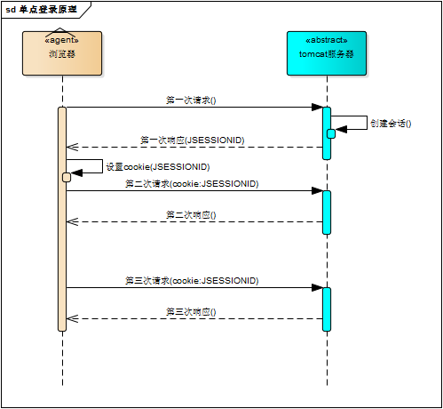
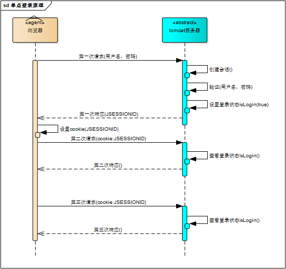

单点登录原则
前言
本人平时学习及收集内容，欢迎参入一起讨论。
内容
一、单系统登录机制
- http 无状态协议
- 会话机制
- 登录状态
1.1 http 无状态协议
web 应用采用 browser/server 架构，http 作为通信协议。http 是无状协议，浏览器的每一次请求，服务器会独立处理，不与之前或之后的请求产生关联，这个过程用下图说明，三次请求/响应对之间没有任何联系。

但这也同时意味着，任何用户都能通过浏览器访问服务器资源，如果想保护服务器的某些资源，必须限制浏览器请求；要限制浏览器请求，响应合法请求；要鉴别浏览器请求，必须清楚浏览器请求状态。既然 http 协议无状态，那就让服务器和浏览器共同维护一个状态吧！这就是会话机制
1.2 会话机制
浏览器第一次请求服务器，服务器创建一个会话，并将会话的 Id 作为响应的一部分发送给浏览器，浏览器存储会话 id，并在后续第二次和第三次请求中带上会话 id，服务器取得请求中的会话 id 就知道是不是同一个用户了，这个过程用下图说明，后续请求与第一次请求产生了关联

服务器在内存中保存会话对象，浏览器怎么保存会话 id 呢？你可能会想到两种方式
- 请求参数
- cookie
将会话 id 作为每一个请求的参数，服务器接收请求自然能解析参数获得会话 id，并借此判断是否来自同一会话，很明显，这种方式不靠谱。那就浏览器自己维护这个会话 id 吧，每次发送 http 请求时浏览器自动发送会话 id，cookie 机制正好用来做这件事。cookie 是浏览器用来存储少量数据的一种机制，数据以“key/value”形式存储，浏览器发送 http 请求时自动附带 cookie 信息
tomcat 会话机制当然也实现了 cookie，访问 tomcat 服务器时，浏览器中可以看到一个名为“JSESSIONID”的 cookie，这就是 tomcat 会话机制维护的会话 id，使用了 cookie 的请求响应过程如下图

1.3 登录状态
有了会话机制，登录状态就好明白了，我们假设浏览器第一次请求服务器需要输入用户名与密码验证身份，服务器拿到用户密码去数据库比对，正确的话说明当前持有这个会话的用户是合法用户，应该将这个会话票房为“已授权”或者“已登录”等等之类的状态，既然是会话的状态，自然要保存在会话对象中，tomcat 在会话对象中设置登录状态如下：
HttpSession session = request.getSession();
session.setAttribute("isLogin", true);
2
用户再次访问时，tomcat 在会话对象中查看登录状态
HttpSession session = request.getSession();
session.getAttribute("isLogin");
2
实现了登录状态的浏览器请求服务器模型如下图描述

每次请求受保护资源时都会检查会话对象中的登录状态，只有 isLogin=true 的会话才能访问，登录机制因此而实现。
二、多系统的复杂性
web 系统早已从久远的单系统发展成为如今由多系统组成的应用群，面对如此众多的系统，用户难道要一个一个登录、然后一个一个注销吗？就像下面描述的这样

web 系统由单系统发展成多系统组成的应用群，复杂性应该由系统内部承担，而不是用户。无论 web 系统内部多么复杂，对应用而言，都是一个统一的整体，也就是说，用户访问 web 系统的整个应用群与访问单个系统一样，登录/注册只要一次就够了

虽然单系统的登录解决方案很完美，但对于多系统应用群已经不再适用了，为什么呢？
单系统登录解决方案的核心是 cookie，cookie 携带会话 id 在浏览器与服务器之间维护会话状态。但 cookie 是有限制的，这个限制就是 cookie 的域（通常对应网站的域名），浏览器发送 http 请求时会自动拾与该域匹配的 cookie，而不是所有 cookie

既然这样，为什么不将 web 应用群中所有子系统的域名统一在一个项域名下，例如“*.baidu.com”，然后将它们的 cookie 域设置为"baidu.com"，这种做法理论上是可以的，甚至早期很多多系统登录就采用这种同域名共享 cookie 的方式。
然而，可行并不代表好，共享 cookie 的方式存在众多局限。首先，应用群域名得统一；其次，应用群各系统使用的技术（至少是 web 服务器）要相同，不然 cookie 的 key 值（tomcat 为 JSESSIONID）不同，无法维持会话，共享 cookie 的方式是无法实现跨语言技术平台登录的，比如 java、php、.net 系统之间；第三，cookie 本身不安全。
因此，我们需要一种全新的登录方式来实现多系统应用群的登录，这就是单点登录
三、单点登录
什么是单点登录？单点登录全称 Single Sign On（以下简称 SSO），是指在多系统应用群中登录一个系统，便可在其他中得到授权而无需再次登录，包括单点登录与单点注销两部分。
3.1 登录
相比于单系统登录，sso 需要一个独立的认证中心，只有认证中心能接受用户的用户名密码等安全信息，其他系统不提供登录入口，只接受认证中心的间接授权。间接授权通过令牌实现，sso 认证中心验证用户的用户名密码没问题，创建授权令牌，在接下来的跳转过程中，授权令牌作为参数发送给各个子系统，子系统拿到令牌，即得到了授权，可以借此创建局部会话，局部会话登录方式与单系统的登录方式相同。这个过程，也就是单点登录的原理，用下图说明：

下面对上图简要描述
- 用户访问系统 1 的受保护资源，系统 1 发现用户未登录，跳转至 sso 认证中心，并将自己的地址作为参数
- sso 认证中心发现用户未登录，将用户引导至登录页面
- 用户输入用户名密码提交登录申请
- sso 认证中心校验用户信息，创建用户与 sso 认证中心之间的会话，称为全局会话，同时创建授权令牌
- sso 认证中心等着令牌跳转会最初的请求地址（系统 1）
- 系统 1 拿到令牌，去 sso 认证中心校验令牌是否有效
- sso 认证中心校验令牌，返回有效，注册系统 1
- 系统 1 使用该令牌创建与用户的会话，称为局部会话，返回受保护资源
- 用户访问系统的受保护资源
- 系统 2 发现用户未登录，跳转至 sso 认证中心，并将自己的地址作为参数
- sso 认证中心发现用户已登录（将客户端已存在的 cookie 发送给认证中心），跳转回系统 2 的地址，并附上令牌
- 系统 2 拿到令牌，去 sso 认证中心校验令牌是否有效
- sso 认证中心校验令牌，返回有效，注册系统 2
- 系统 2 使用该令牌创建与用户的局部会话，返回受保护资源
用户登录成功之后，会与 sso 认证中心及各个子系统建立会话，用户与 sso 认证中心建立的会话称为全局会话，用户与各个子系统建立的会话称为局部会话，局部会话建立之后，用户访问子系统受保护资源将不再通过 sso 认证中心，全局会话与局部会话有如下约束关系
- 局部会话存在，全局会话一定存在
- 全部会话存在，局部会话不一定存在
- 全局会话销毁，局部会话必须销毁
你可以通过博客园、百度、csdn、淘宝等网站的登录过程加深对单点的理解，注意观察登录过程中的跳转 url 与参数
3.2 注销
单点登录自然也要单点注销，在一个子系统中注销，所有子系统的会话都将被销毁，用下面的图来说明

sso 认证中心一直监听全局会话的状态，一旦全局会话销毁，监听器将通知所有注册系统执行注销操作
下面对上图简要说明
- 用户向系统 1 发起注销请求
- 系统 1 根据用户与系统 1 建立的会话 id 拿到令牌，向 sso 认证中心发起注销请求
- sso 认证中心校验令牌有效，销毁全局会话，同时取出所有用此令牌注册的系统地址
- sso 认证中心向所有注册系统发起注销请求
- 各注册系统接收 sso 认证中心的注销请求，销毁局部会话
- sso 认证中心引导用户到登录页面
四、部署图
单点登录涉及 sso 认证中心与众子系统，子系统与 sso 认证中心需要通信以交换令牌、校验令牌及发起注销请求，因而子系统必须集成 sso 的客户端，sso 认证中心则是 sso 服务端，整个单点登录过程实质是 sso 客户端与服务端通信的过程，用下图描述

参考资料
联系作者
平凡世界，贵在坚持。

← OAuth 授权工作原理 扫码登录→